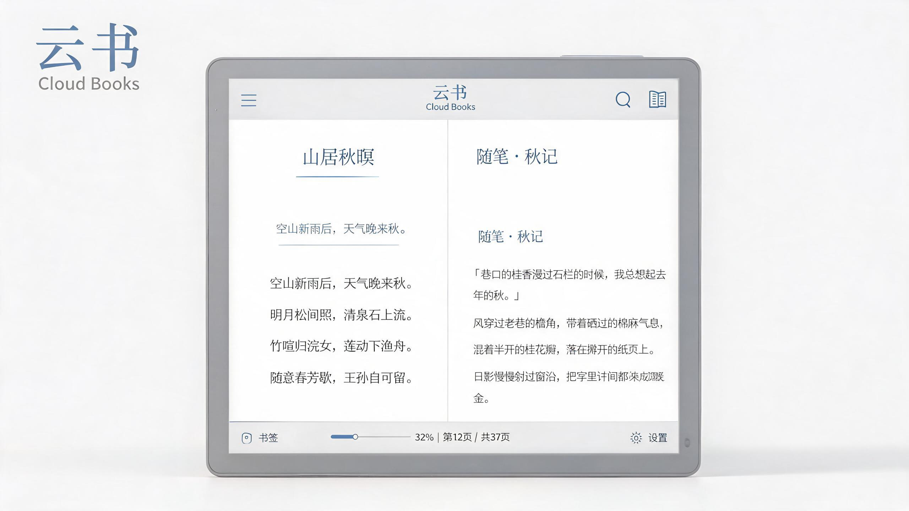

项目背景
云书阅读是一个面向文学爱好者的数字阅读平台，汇聚小说、散文、诗歌与经典文学。客户希望打造一个不同于主流网文平台的阅读体验： slower、更沉静，更接近纸质书的阅读节奏。
设计思路
为了让屏幕阅读也能拥有纸质书的专注感，我采用了极简的界面框架：隐藏所有非必要控件，将视觉重心完全交给文字本身。配色以温暖的米白与深灰为主，提供多种纸张质感的背景主题；字号、行高与段间距均可自定义，满足不同读者的阅读习惯。
书架页摒弃了密集的信息堆叠，采用大面积封面与克制排版的卡片布局，让用户像浏览实体书架一样选择下一本读物。搜索与分类入口被收敛至顶部，减少视觉干扰。
设计过程
设计过程中，我组织了 3 轮阅读器原型测试，重点验证翻页手势、亮度调节与目录导航的易用性。结果显示，用户对“点击边缘翻页”与“底部滑动调节进度”的接受度最高。最终方案将这两种交互结合，并在首次使用时提供轻量引导。
上线后，用户平均单次阅读时长从 18 分钟提升至 31 分钟，夜间模式使用率超过 60%，阅读完成率提升了 22%。